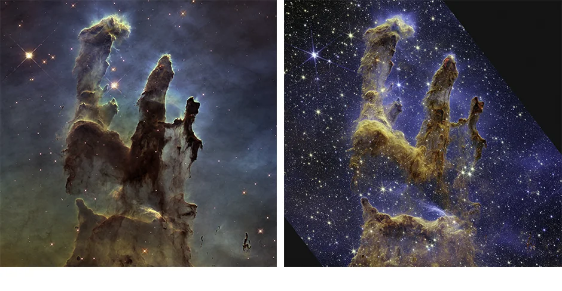
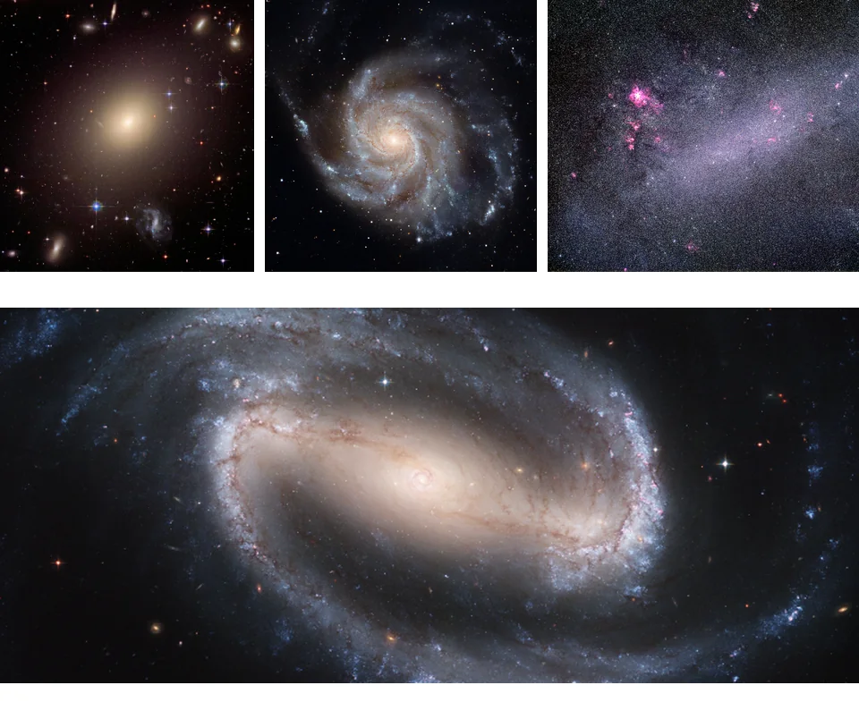
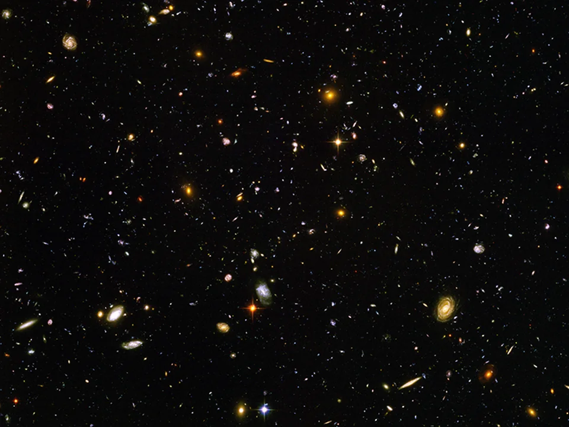

대학 일반 과학 · 일반지구과학
일반지구과학 11별과 은하, 우주
별빛 한 줄기에서 우주의 역사까지
이어지는 내용
이 책에서는 여기가 마지막 단계이다.
학습 목표
- 흑체 복사 법칙(빈 변위 법칙, 슈테판–볼츠만 법칙)과 키르히호프 법칙, 도플러 효과를 써서 별빛에서 온도·광도·조성·속도를 끌어낼 수 있고, 망원경의 집광력·분해능을 계산할 수 있다.
- 태양의 층 구조와 활동을 설명하고, 질량–에너지 등가로 태양의 에너지원이 수소 핵융합임을 정량적으로 보일 수 있다.
- 시차·거리 지수·광도·반지름·쌍성 질량을 계산하고, H–R도에서 별의 물리량과 진화 단계를 읽을 수 있다.
- 별의 탄생에서 최후까지를 질량에 따라 설명하고, 백색 왜성·중성자별·블랙홀을 지탱하거나 만드는 물리를 비교할 수 있다.
- 우리은하의 구조와 회전으로 은하의 질량을 구하고, 은하의 형태 분류와 은하군·은하단의 특징을 설명할 수 있다.
- 허블–르메트르 법칙으로 거리와 우주의 나이를 어림하고, 빅뱅 우주론의 관측 증거와 암흑 물질·암흑 에너지의 근거를 평가할 수 있다.
이 단원의 학습 사다리
| 단계 | 무엇을 하나? |
|---|---|
| STEP 1. 이전 학습 다시 보기 | 지구과학 「태양계 천체와 별과 우주의 진화」, 행성우주과학 「태양과 별의 관측」·「은하와 우주」에서 배운 것을 정리한다 |
| STEP 2. 기초 다지기 | 등급과 로그, 흑체와 플랑크 분포, 원자의 에너지 준위, 질량–에너지 등가, 정역학 평형을 익힌다 |
| STEP 3. 핵심 개념 | 빛과 스펙트럼 → 망원경 → 태양 → 별의 물리량과 H–R도 → 별의 진화 → 별의 최후 → 우리은하 → 은하와 은하단 → 팽창 우주와 빅뱅 |
| STEP 4. 오개념 바로잡기 | "빅뱅은 한 점에서의 폭발이다", "블랙홀은 모든 것을 빨아들인다" 같은 착각을 바로잡는다 |
| STEP 5. 전공 맛보기 | 별의 내부 구조 방정식, 프리드만 방정식과 우주의 운명 |
| STEP 6. 생활·산업·진로 | 영상 센서와 분광 기술, 중력파·다중 신호 천문학, 원자핵 자료와 핵융합, 천문 빅데이터 |
단원 들어가기
밤하늘에서 오리온자리의 베텔게우스는 붉게, 리겔은 푸르게 빛난다. 두 별까지는 수백 광년이 넘고, 사람이 그곳에 가 본 적도 없다. 그런데도 우리는 베텔게우스의 표면 온도가 약 3500 K이고, 그 반지름이 화성 궤도를 훌쩍 넘을 만큼 크며, 머지않아(천문학적 시간으로) 초신성으로 폭발할 별이라는 것을 안다. 이 모든 것은 별빛 한 줄기를 파장별로 펼쳐 읽어 낸 결과이다.
같은 방법을 더 멀리 적용하면 놀라운 이야기가 펼쳐진다. 먼 은하일수록 빛이 더 붉게 늘어나 있고, 우주의 모든 방향에서 절대 온도 약 2.7 K의 희미한 전파가 쏟아지며, 은하들은 눈에 보이는 별만으로는 설명할 수 없을 만큼 빠르게 돈다. 이 단원은 빛을 읽는 도구에서 출발하여 별의 일생, 은하의 구조, 그리고 약 138억 년에 걸친 우주의 역사까지 따라간다.
STEP 1이전 학습 다시 보기
연계 개념표
| 이전 단원 | 그때 배운 것 | 이 단원에서 확장되는 것 |
|---|---|---|
| 지구과학 「태양계 천체와 별과 우주의 진화」 '흑체 복사 법칙과 별의 물리량', 'H-R도와 질량에 따른 별의 진화' | 분광형, 빈 법칙, 슈테판–볼츠만 법칙, , H-R도와 진화 경로 | 플랑크 분포의 의미, 키르히호프 법칙, 질량–에너지로 본 에너지원과 주계열 수명, 축퇴압과 별의 최후 |
| 지구과학 「태양계 천체와 별과 우주의 진화」 '허블의 은하 분류와 특이 은하', '허블–르메트르 법칙과 우주론' | 은하의 형태 분류, , 우주의 나이 어림, 빅뱅 우주론과 정상 우주론 비교 | 적색 편이 와 척도 인자, 우주 배경 복사의 온도 변화, 우주 구성 성분 |
| 행성우주과학 「태양과 별의 관측」 | 흑점과 다파장 관측, 연주시차와 거리 지수, 공간 운동, 쌍성의 질량, 질량-광도 관계, 변광성 | 별의 물리량을 한 체계(H–R도) 로 묶고, 질량에 따라 진화를 정량적으로 비교 |
| 행성우주과학 「은하와 우주」 | 성단의 C-M도, 세페이드의 주기-광도 관계, 성간 소광, 은하 회전 곡선, 적색 편이 탐사와 거대 구조 | 회전 곡선으로 은하 질량 계산, 은하단 질량과 암흑 물질, 우주 가속 팽창의 증거 |
준비 운동 (사전 진단)
Q1. 표면 온도가 태양의 2배인 별의 최대 복사 파장은 태양의 몇 배인가? 같은 반지름이라면 광도는 몇 배인가?
Q2. 겉보기 등급 7, 절대등급 2인 별까지의 거리는 몇 pc인가?
Q3. 원래 파장 500.0 nm인 흡수선이 501.0 nm에서 관측되었다. 이 천체는 다가오는가, 멀어지는가? 시선속도는 얼마인가? ()
Q4. 주계열성 가운데 질량이 큰 별의 수명이 짧은 까닭을 '연료'와 '소비 속도'라는 말을 써서 설명하시오.
정답 및 해설
Q1. 최대 복사 파장은 배(빈 법칙 ), 광도는 배(슈테판–볼츠만 법칙).
Q2. 100 pc — → .
Q3. 파장이 길어졌으므로 멀어진다. .
Q4. 질량이 큰 별은 연료(수소)가 많지만, 중심 온도가 높아 연료를 훨씬 빨리 소비한다. 광도(소비 속도)가 질량의 약 3.5제곱에 비례하므로, 연료가 늘어나는 비율보다 소비 속도가 늘어나는 비율이 훨씬 커서 수명이 짧아진다.
STEP 2기초 다지기
① 등급과 로그 — 밝기의 비율을 더하기로
등급은 밝기(복사 플럭스 )의 비율을 로그로 나타낸 것이다.
절대등급 은 별을 10 pc 거리에 둘 때의 등급이므로 광도와 직접 연결된다. 태양의 (가시광) 절대등급을 약 4.83으로 하면
이다(엄밀히는 모든 파장을 합친 복사 등급에 대해 성립하지만, 이 단원에서는 근사로 쓴다).
| 로그의 성질 | 예 |
|---|---|
| 광도 비를 곱하면 등급은 더해진다 | |
| 거리의 제곱 → → 거리 지수의 | |
| 2.5등급 차이 = 밝기 10배 |
② 흑체와 플랑크 분포
들어오는 모든 복사를 흡수하고 온도로만 정해지는 복사를 내는 이상적인 물체를 흑체(blackbody) 라 한다. 흑체가 파장 에서 내는 복사의 세기는 플랑크 함수(Planck function) 로 주어진다.
(, ). 이 식을 외울 필요는 없지만 모양을 읽을 줄은 알아야 한다.
- 짧은 파장 쪽에서는 지수 함수 때문에 세기가 급격히 0으로 떨어지고, 긴 파장 쪽에서는 완만하게 줄어든다. 그래서 곡선은 봉우리가 왼쪽으로 쏠린 비대칭 모양이다.
- 온도가 높아지면 모든 파장에서 세기가 커지고, 봉우리가 짧은 파장 쪽으로 옮겨 간다.
- 봉우리 위치를 미분으로 구한 것이 빈 변위 법칙, 곡선 아래 넓이를 적분한 것이 슈테판–볼츠만 법칙이다(STEP 3 ①).
| 파장 | 3500 K 흑체 | 5800 K 흑체 | 10000 K 흑체 |
|---|---|---|---|
| 300 nm(자외선) | 매우 약함 | 중간 | 가장 강한 쪽 |
| 500 nm(초록) | 약함 | 봉우리 근처 | 강함 |
| 1000 nm(적외선) | 봉우리 근처 | 중간 | 중간 |
| 보이는 색 | 주황~붉은색 | 노란빛 흰색 | 푸른빛 흰색 |
③ 원자의 에너지 준위와 선 스펙트럼
원자 속 전자는 정해진 에너지 준위에만 있을 수 있다. 전자가 높은 준위에서 낮은 준위로 내려가면 그 차이만큼의 에너지를 가진 광자를 내놓고(방출선), 같은 에너지의 광자를 흡수하면 올라간다(흡수선).
수소 원자의 준위는 이다. 전이의 에너지는 이고 파장은 약 656.3 nm(붉은색 Hα선)이다. 로 끝나는 전이들을 발머 계열이라 하며, 가시광선에 있어 별의 분광형을 정하는 데 중요하다. 원소마다 준위가 달라서 선의 위치는 원소의 '지문'이 된다.
④ 질량–에너지 등가
특수 상대성 이론에 따르면 질량은 에너지의 한 형태이다.
원자핵이 결합할 때 생성물의 질량이 반응물보다 작아지면, 그 차이(질량 결손)가 에너지로 나온다. 질량 1 kg은 에 해당하여, 화학 반응(연료 1 kg당 약 J 수준)과 비교할 수 없을 만큼 크다. 원자 질량 단위로는 이다.
⑤ 정역학 평형 — 별이 무너지지 않는 이유
별은 자체 중력으로 안쪽으로 무너지려 하고, 내부의 압력은 바깥쪽으로 밀어낸다. 별의 어느 깊이에서든 이 두 힘이 균형을 이루는 상태를 정역학 평형(hydrostatic equilibrium) 이라 한다. 대기의 기압이 높이에 따라 줄어드는 것과 같은 원리이다. 압력의 원천이 무엇이냐(뜨거운 기체의 열압력, 축퇴한 전자나 중성자의 압력)에 따라 별의 일생과 최후가 결정된다.
STEP 3핵심 개념
① 빛과 스펙트럼 — 별을 읽는 문자
전자기파 스펙트럼과 대기의 창
| 영역 | 파장(대략) | 천문학에서 주로 보는 것 | 지상 관측 |
|---|---|---|---|
| 감마선 | 감마선 폭발, 블랙홀 주변 | 불가(우주) | |
| X선 | 0.01~10 nm | 수백만 K의 기체(코로나, 은하단 기체), 강착 원반 | 불가(우주) |
| 자외선 | 10~400 nm | 뜨거운 별(O·B형) | 대부분 불가 |
| 가시광선 | 400~700 nm | 별의 광구 | 가능 |
| 적외선 | 0.7 µm~1 mm | 차가운 별, 먼지에 가려진 별 탄생 영역, 먼 은하 | 일부 창, 높은 산·우주 |
| 전파 | 중성 수소 21 cm선, 분자 구름, 우주 배경 복사, 펄서 | 가능 |
지구 대기는 가시광선과 전파 일부만 통과시킨다(대기의 창). 그래서 감마선·X선·자외선·대부분의 적외선 관측은 우주 망원경이 맡는다.
복사 법칙
(1) 빈 변위 법칙(Wien's displacement law) — 흑체 복사의 봉우리 파장은 온도에 반비례한다.
(2) 슈테판–볼츠만 법칙(Stefan–Boltzmann law) — 단위 면적에서 단위 시간에 나오는 전체 복사 에너지는 온도의 네제곱에 비례한다. 반지름 인 별의 광도는
(3) 역제곱 법칙 — 광도 인 별에서 거리 만큼 떨어진 곳의 복사 플럭스는 이다.
예제 1 — 별의 색과 온도
베텔게우스(표면 온도 약 3500 K), 태양(약 5772 K), 리겔(약 12000 K)의 최대 복사 파장을 구하시오.
풀이
- 베텔게우스: (근적외선)
- 태양: (초록빛 부근, 그러나 가시광선 전체를 고루 내어 희게 보인다)
- 리겔: (자외선)
- 의미: 봉우리가 가시광선 밖에 있어도 별은 색을 띤다. 베텔게우스는 가시광선 중 붉은 쪽이, 리겔은 푸른 쪽이 상대적으로 강해서 그렇게 보인다.
예제 2 — 태양 상수로 태양의 광도와 표면 온도 구하기
지구 대기 밖에서 태양에 수직인 면이 받는 복사 플럭스(태양 상수)는 약 이다. 태양의 광도와 표면 온도를 구하시오. (, )
풀이
- 광도:
- 온도:
- 의미: 지구 위의 측정 하나(태양 상수)와 거리·반지름만으로 1억 5천만 km 떨어진 태양 표면의 온도를 구했다. 이렇게 얻은 온도를 유효 온도라 한다.
키르히호프의 세 법칙 — 스펙트럼의 종류
| 조건 | 스펙트럼 | 예 |
|---|---|---|
| 뜨겁고 밀도가 높은 물체(고체, 액체, 밀도 높은 기체) | 연속 스펙트럼 | 별의 광구, 백열전구 필라멘트 |
| 뜨겁고 희박한 기체 | 방출선 스펙트럼(밝은 선) | 성운, 네온사인, 태양 코로나 |
| 연속 스펙트럼 광원 앞의 더 차가운 희박한 기체 | 흡수선 스펙트럼(어두운 선) | 별의 스펙트럼(광구 위 대기가 흡수) |
별의 스펙트럼은 대부분 흡수선 스펙트럼이다. 흡수선의 위치로 원소의 종류를, 세기와 모양으로 온도·밀도·압력을, 선의 이동으로 속도를 알아낸다. 별의 대기 조성을 분석하면 대부분의 별이 질량비로 수소 약 70 %, 헬륨 약 28 %, 나머지 원소 약 2 %로 이루어져 있다.
도플러 효과
광원이 시선 방향으로 속도 로 움직이면(멀어지면 +) 관측 파장이 바뀐다. 일 때
이다. 멀어지면 파장이 길어지는 적색 편이, 다가오면 짧아지는 청색 편이가 나타난다. 도플러 효과는 시선 방향 성분만 알려 준다는 점에 주의한다.
| 도플러 측정의 응용 | 무엇을 아나 |
|---|---|
| 별의 시선속도 | 우리은하 안의 별 운동, 분광 쌍성의 궤도 |
| 별의 흔들림 | 외계 행성의 질량 하한 |
| 회전하는 은하의 양쪽 끝 | 은하의 회전 속도 → 질량 |
| 선의 폭 넓어짐 | 별의 자전, 기체의 열운동, 은하단 속 은하들의 속도 분산 |
| 먼 은하의 적색 편이 | 우주 팽창(STEP 3 ⑨) |
예제 3 — Hα선으로 시선속도 구하기
어떤 별의 Hα선(정지 파장 656.28 nm)이 656.50 nm에서 관측되었다. 시선속도를 구하시오. ()
풀이
- , 적색 편이이므로 멀어진다.
- 의미: 파장 변화는 0.03 %에 불과하다. 이를 재려면 분해능이 높은 분광기와 정확한 비교 광원이 필요하다. 오늘날 최고 수준의 분광기는 m/s 단위의 시선속도 변화도 잴 수 있다.
바로 확인방금 읽은 내용, 바로 점검하기
- 별의 표면 온도가 2배가 되면 단위 면적에서 나오는 복사 에너지는 몇 배가 되고, 최대 복사 파장은 몇 배가 되는가?
- (O/X) 별의 스펙트럼은 대부분 방출선 스펙트럼이다.
- 정지 파장 500.0 nm인 흡수선이 499.5 nm에서 관측되었다. 시선속도는? ( km/s)
정답
- 16배, 2분의 1배 — , .
- X — 광구 위의 더 차가운 대기가 흡수하여 흡수선 스펙트럼이 된다.
- 약 300 km/s로 다가온다 — , 청색 편이.
② 망원경 — 빛을 모으고, 쪼개고, 가르다
망원경의 세 가지 능력
| 능력 | 정하는 것 | 식 |
|---|---|---|
| 집광력 | 어두운 천체를 볼 수 있는 능력 | 구경(지름) 의 제곱에 비례: |
| 분해능 | 가까이 붙은 두 점을 구별하는 최소 각 | 회절 한계 (라디안) |
| 배율 | 상을 확대하는 정도 | 대물렌즈(주경) 초점 거리 ÷ 접안렌즈 초점 거리: |
굴절 망원경과 반사 망원경
| 구분 | 굴절 망원경 | 반사 망원경 |
|---|---|---|
| 빛을 모으는 것 | 볼록 렌즈 | 오목 거울 |
| 장점 | 경통이 닫혀 있어 상이 안정 | 색수차가 없다. 거울은 뒷면을 받칠 수 있어 크게 만들 수 있다 |
| 단점 | 색수차, 큰 렌즈는 무게로 휘고 흡수가 크다 | 경통이 열려 있고 부경이 빛 일부를 가린다 |
| 현재 | 구경 약 1 m가 한계 | 연구용 대형 망원경은 모두 반사식(8~10 m급, 30 m급 건설 중) |
대기의 흔들림과 이를 넘는 기술
지상 망원경의 실제 분해능은 대기의 난류(시상, seeing) 때문에 대개 ~ 정도로 제한된다. 이를 극복하는 방법은 다음과 같다.
- 적응 광학: 밝은 별이나 레이저로 만든 인공별의 상이 흔들리는 정도를 1초에 수백~수천 번 재고, 변형 거울로 실시간 보정한다.
- 우주 망원경: 대기 밖에서 회절 한계의 분해능을 얻고, 대기가 막는 파장도 관측한다.
- 간섭계: 멀리 떨어진 여러 망원경의 신호를 합쳐, 망원경 사이 거리(기선)를 구경처럼 쓴다. 전파 간섭계를 지구 규모로 엮어 블랙홀의 그림자를 찍었다.
예제 4 — 구경과 분해능
(1) 구경 8 m 망원경의 집광력은 사람 눈동자(지름 7 mm)의 몇 배인가? (2) 파장 550 nm에서 구경 2.4 m 우주 망원경과 사람 눈의 회절 한계 분해능을 각(초)으로 구하시오. () (3) 구경 100 m 전파 망원경으로 파장 21 cm를 관측할 때의 분해능은?
풀이 (1) 배 (2) 우주 망원경: , 눈: (3)
- 의미: 전파는 파장이 길어 단일 망원경으로는 분해능이 나쁘다(보름달 지름의 약 4분의 1). 그래서 전파 천문학에서 간섭계가 특히 발달했다.
바로 확인방금 읽은 내용, 바로 점검하기
- 구경이 2배가 되면 집광력과 회절 한계 분해각은 각각 몇 배가 되는가?
- (O/X) 연구용 망원경에서 가장 중요한 성능은 배율이다.
- 빈칸: 대기 난류에 의한 상의 흔들림을 변형 거울로 실시간 보정하는 기술을 ( )이라 한다.
정답
- 집광력 4배, 분해각 2분의 1배 — , .
- X — 배율은 접안렌즈로 바꿀 수 있고, 집광력·분해능을 정하는 구경이 중요하다.
- 적응 광학
③ 태양 — 가장 가까운 별의 구조, 활동, 에너지원
태양의 층 구조
| 층 | 범위(태양 반지름 기준, 약) | 온도(약) | 에너지 전달·특징 |
|---|---|---|---|
| 중심핵 | 0 ~ 0.25 | 1570만 K(중심) | 수소 핵융합. 중심 밀도 약 |
| 복사층 | 0.25 ~ 0.7 | 700만 → 200만 K | 광자가 흡수·재방출을 거듭하며 무작위로 걸어 나간다 |
| 대류층 | 0.7 ~ 1.0 | 200만 K → 약 5800 K | 온도 기울기가 커서 기체가 대류로 열을 나른다 |
| 광구 | 두께 수백 km | 약 5800 K | 눈에 보이는 표면. 쌀알 무늬, 흑점, 주연 감광 |
| 채층 | 광구 위 수천 km | 수천 ~ 수만 K | Hα선에서 붉게 보인다. 스피큘 |
| 코로나 | 수백만 km 이상 | 100만 ~ 200만 K | X선·극자외선. 바깥으로 태양풍이 되어 흘러 나간다 |
내부 구조는 직접 볼 수 없지만, 태양 표면의 미세한 진동을 분석하는 일진학(helioseismology) 으로 지진파로 지구 내부를 보듯이 대류층의 깊이와 내부 회전을 측정한다.
태양의 활동
태양 활동의 바탕은 대류층의 차등 자전과 대류가 만들어 내는 자기장이다. 흑점은 강한 자기장 다발이 광구를 뚫고 나와 대류를 막아 주변보다 차가워진(약 4000 K) 영역이고, 흑점 수는 약 11년 주기로 변한다. 흑점 주변의 꼬인 자기장이 갑자기 재결합하면 플레어가, 자기장에 갇혔던 플라스마가 한꺼번에 튀어나가면 코로나 질량 방출(CME) 이 일어난다. 코로나에서 끊임없이 흘러나오는 태양풍(초속 약 400~800 km)은 지구 자기권을 누르고, 강한 CME가 지구에 닿으면 자기 폭풍과 오로라, 위성·통신·전력망 장애가 생긴다. 코로나가 광구보다 수백 배 뜨거운 까닭은 자기장이 에너지를 위로 나르기 때문으로 여겨지지만, 정확한 가열 기작은 지금도 연구 중이다.
태양의 에너지원 — 무엇이 45억 년을 버티게 하나?
| 후보 | 어림 수명 | 판정 |
|---|---|---|
| 화학 연소(석탄 정도의 에너지 밀도, 약 J/kg) | 약 5천 년 | 너무 짧다 |
| 중력 수축(켈빈–헬름홀츠 시간 ) | 약 3천만 년 | 지구·운석의 나이(약 45억 년)보다 짧다 |
| 수소 핵융합(질량의 0.7 %가 에너지로) | 약 100억 년 | 지질학적 시간과 맞는다 |
중심핵에서는 양성자–양성자 연쇄 반응(p–p chain) 으로 수소 원자핵 4개가 헬륨 원자핵 1개가 된다.
수소 원자 4개의 질량은 , 헬륨 원자는 이므로 질량 결손은 (처음 질량의 약 0.71 %), 에너지로는 이다(그중 일부는 중성미자가 가지고 달아난다).
태양보다 약 1.3배 이상 무거운 별에서는 중심 온도가 더 높아 탄소·질소·산소를 촉매로 쓰는 CNO 순환이 주된 반응이 된다. CNO 순환은 온도에 훨씬 민감하여, 무거운 별의 핵이 대류하고 광도가 매우 큰 까닭이 된다.
예제 5 — 태양은 1초에 얼마나 가벼워지나? 언제까지 빛날까?
태양의 광도를 , 질량을 이라 하자. (1) 태양이 매초 에너지로 바꾸는 질량을 구하시오. (2) 매초 헬륨으로 바뀌는 수소의 질량을 구하시오(질량의 0.7 %가 에너지로 바뀐다). (3) 태양 질량의 약 10 %(중심핵)의 수소만 태울 수 있다면 주계열 수명은 얼마인가?
풀이 (1) (매초 약 430만 톤) (2) (매초 약 6억 톤의 수소) (3) 년
- 의미: 태양은 약 100억 년의 주계열 수명 중 절반쯤 지났다. 100억 년 동안 질량으로 잃는 양은 전체의 약 0.07 %에 불과하다.
중성미자 — 중심핵에서 온 직접 증거
p–p 연쇄 반응에서 나오는 중성미자(neutrino) 는 물질과 거의 반응하지 않아 태양 중심에서 약 2초 만에 빠져나와 8분여 만에 지구에 닿는다. 지구에서는 1 cm²당 매초 약 600억 개가 지나간다. 반면 중심에서 생긴 광자 에너지는 흡수와 재방출을 거듭하며 복사층을 빠져나오는 데 수만 년 이상이 걸리는 것으로 추정된다. 지하 검출기로 측정한 태양 중성미자의 수가 처음에 예측의 약 3분의 1에 그쳤던 '태양 중성미자 문제'는 중성미자가 날아오는 동안 종류가 바뀐다는 중성미자 진동으로 해결되었고(2000년대 초), 태양 핵융합 모형이 옳음을 확인해 주었다.
바로 확인방금 읽은 내용, 바로 점검하기
- 짝짓기: (가) 중심핵, (나) 복사층, (다) 대류층 — ㉠ 기체의 대류로 열 전달, ㉡ 수소 핵융합, ㉢ 광자의 흡수·재방출
- (O/X) 흑점은 주변보다 온도가 높아서 어둡게 보인다.
- p–p 연쇄 반응에서 수소 원자 4개의 질량 중 에너지로 바뀌는 비율은 약 몇 %인가?
- 빈칸: 태양 중성미자 문제는 중성미자가 날아오는 동안 종류가 바뀌는 ( )으로 해결되었다.
정답
- (가)–㉡, (나)–㉢, (다)–㉠
- X — 강한 자기장이 대류를 막아 주변보다 차가워(약 4000 K) 어둡게 보인다.
- 약 0.7 % — 질량 결손 .
- 중성미자 진동
④ 별의 거리·밝기·색·질량과 H–R도
거리 — 시차와 거리 지수
는 성간 티끌에 의한 소광(등급)이다. 소광을 무시하면 거리를 실제보다 멀게 계산한다. 광년이다.
색과 분광형
별의 색은 두 필터(파랑 B, 노랑 V)로 잰 등급의 차이인 색지수 로 정량화한다. 뜨거운 별은 파란빛이 상대적으로 강해 등급이 작으므로 가 작거나 음수이다(태양은 약 0.65).
| 분광형 | 표면 온도(약) | 색 | 두드러진 흡수선 | 예 |
|---|---|---|---|---|
| O | 30,000 K 이상 | 청색 | 이온화된 헬륨 | 오리온자리 허리띠의 일부 별 |
| B | 10,000~30,000 K | 청백색 | 중성 헬륨, 수소 | 리겔, 스피카 |
| A | 7,500~10,000 K | 백색 | 수소(가장 강함) | 시리우스, 직녀성 |
| F | 6,000~7,500 K | 황백색 | 수소, 이온화된 칼슘 | 프로키온 |
| G | 5,200~6,000 K | 황색 | 이온화된 칼슘, 금속 | 태양 |
| K | 3,700~5,200 K | 주황색 | 중성 금속 | 아크투르스 |
| M | 3,700 K 이하 | 적색 | 산화 타이타늄 분자 | 베텔게우스, 프록시마 센타우리 |
흡수선의 세기가 온도에 따라 달라지는 것은 조성이 달라서가 아니다. 예를 들어 수소 발머선은 준위에 전자가 많아야 강한데, 온도가 너무 낮으면 대부분 에 있고 너무 높으면 수소가 이온화되어 버린다. 그래서 약 10,000 K(A형)에서 가장 강하다. 이처럼 스펙트럼은 주로 온도를 알려 준다.
광도와 반지름
를 태양 단위로 쓰면
이다. 온도가 같은데 광도가 수천 배 크면 반지름이 수십 배 크다는 뜻이다. 같은 분광형 안에서 반지름(광도)에 따라 나눈 것이 광도 계급(Ⅰ 초거성, Ⅲ 거성, Ⅴ 주계열성 등)이다.
예제 6 — 별의 물리량 한꺼번에 구하기
연주시차 , 겉보기 등급 2.0, 표면 온도 4000 K인 별이 있다(소광 무시). (1) 거리와 절대등급, (2) 광도(태양 = 1), (3) 반지름(태양 = 1)을 구하시오. (, )
풀이 (1) → (2) (3)
- 의미: 태양보다 차갑지만 13배 이상 밝으므로 반지름이 약 8배인 별, 즉 주계열을 떠나 부풀어 가는 별이다(H–R도에서 주계열의 오른쪽 위).
질량 — 쌍성과 질량–광도 관계
별의 질량은 쌍성의 궤도로 직접 잰다. 케플러 제3법칙을 태양계 단위로 쓰면
이다. 이렇게 질량을 잰 주계열성들은 정도의 질량–광도 관계를 따른다(지수는 질량 범위에 따라 약 3~4). 주계열성의 질량은 약 (이보다 가벼우면 수소 핵융합을 못 하는 갈색 왜성)부터 이상까지이다.
H–R도 — 별의 지도
가로축에 표면 온도(왼쪽이 높음) 또는 분광형·색지수, 세로축에 광도 또는 절대등급을 놓은 그림이 헤르츠스프룽–러셀도(H–R도) 이다.
| 영역 | 위치 | 특징 |
|---|---|---|
| 주계열 | 왼쪽 위 ~ 오른쪽 아래의 띠 | 별의 약 90 %. 중심에서 수소 핵융합. 위쪽일수록 무겁고 뜨겁고 밝다 |
| 거성·초거성 | 오른쪽 위 | 차갑지만 매우 밝다 → 반지름이 크다 |
| 백색 왜성 | 왼쪽 아래 | 뜨겁지만 어둡다 → 반지름이 지구 정도 |
H–R도에서 같은 반지름의 별은 기울어진 직선 위에 놓인다($\log L = 4\log T + $ 상수). 따라서 H–R도 한 장에서 온도·광도·반지름을 동시에 읽고, 주계열성이라면 질량과 수명까지 어림할 수 있다.
바로 확인방금 읽은 내용, 바로 점검하기
- 연주시차가 인 별의 거리는?
- 표면 온도가 같은데 광도가 100배인 별의 반지름은 몇 배인가?
- 겉보기 등급 7, 절대등급 2인 별의 거리는(소광 무시)?
- (O/X) H–R도에서 백색 왜성이 왼쪽 아래에 있는 것은 뜨겁지만 반지름이 작기 때문이다.
정답
- 20 pc — .
- 10배 — .
- 100 pc — 에서 .
- O
⑤ 별의 탄생과 진화
별의 탄생
별은 우리은하 원반의 차갑고(약 10~20 K) 밀도가 높은 분자 구름에서 태어난다. 구름의 중력이 기체의 열압력을 이기면(진스 조건: 차갑고 밀도가 높고 질량이 클수록 붕괴하기 쉽다) 수축이 시작되고, 구름은 여러 덩어리로 쪼개져 보통 성단을 이루며 한꺼번에 별이 생긴다.
- 원시별: 수축하는 덩어리의 중심이 중력 에너지의 절반을 열로 바꾸어 뜨거워진다. 주변 먼지에 가려 적외선으로만 보인다. 회전 때문에 둘레에 원반이 생기고, 축 방향으로 기체를 내뿜는 쌍극 분출이 나타난다.
- 전주계열성: 수축하며 H–R도에서 오른쪽(차가움)에서 주계열 쪽으로 이동한다. 태양 질량의 별은 이 단계에 수천만 년, 무거운 별은 수십만 년이 걸린다.
- 영년 주계열: 중심 온도가 약 1000만 K에 이르러 수소 핵융합이 시작되고, 핵융합 에너지가 수축을 멈추면 주계열성이 된다.
별이 태어나는 분자 구름은 가시광선으로는 어둡게 가려 보이지만, 적외선으로 보면 그 속의 별들이 드러난다.

주계열 단계 — 질량이 수명을 정한다
연료는 질량 에, 소비 속도는 광도 에 비례하므로
| 질량() | 0.5 | 1 | 2 | 10 | 25 |
|---|---|---|---|---|---|
| 주계열 수명(약) | 570억 년 | 100억 년 | 18억 년 | 3200만 년 | 320만 년 |
(질량이 매우 큰 별은 질량–광도 관계의 지수가 작아지므로 실제 수명은 이 어림보다 조금 길다.) 질량이 태양의 절반인 별은 우주 나이(약 138억 년)보다 수명이 길어, 이런 별이 주계열을 떠난 일은 아직 한 번도 없다.
주계열 이후 — 태양 정도의 별 (약 ~)
| 단계 | 중심 | 바깥 | H–R도 위치 |
|---|---|---|---|
| 적색 거성 | 수소가 다 탄 헬륨 핵이 수축·가열 | 핵 둘레 껍질에서 수소 핵융합, 외피가 크게 팽창 | 오른쪽 위 |
| 헬륨 핵융합 | 약 1억 K에서 헬륨 → 탄소·산소(삼중 알파 반응). 태양 정도 별은 헬륨 섬광으로 갑자기 시작 | 외피가 다소 수축 | 수평 가지 |
| 점근 거성 가지 | 탄소·산소 핵, 둘레에 헬륨·수소 껍질 핵융합 | 다시 크게 팽창, 강한 항성풍으로 질량 잃음 | 오른쪽 맨 위 |
| 행성상 성운 + 백색 왜성 | 탄소·산소 핵이 드러나 백색 왜성이 됨 | 날아간 외피가 백색 왜성의 자외선을 받아 빛나는 성운 | 왼쪽으로 이동 후 왼쪽 아래 |
태양은 약 50억 년 뒤 적색 거성이 되어 수성과 금성을 삼키고, 지구 궤도 근처까지 부풀 것으로 예상된다.
아래는 별이 내뿜은 외피가 빛나는 행성상 성운의 실제 모습이다.
주계열 이후 — 무거운 별 (약 이상)
무거운 별은 중심 온도가 계속 높아져 헬륨 다음 탄소, 네온, 산소, 규소까지 차례로 태워 양파 껍질 같은 층 구조를 만든다. 뒤 단계의 연료일수록 내는 에너지가 적어 단계마다 시간이 짧아진다. 마지막에 규소가 타서 철 핵이 생기는데, 철은 핵자 하나당 결합 에너지가 거의 가장 큰 원자핵이어서 더 이상 핵융합으로 에너지를 낼 수 없다.
철 핵이 약 를 넘으면 전자의 압력이 버티지 못하고 1초도 안 되는 사이에 붕괴한다. 붕괴한 핵이 원자핵 밀도에 이르러 단단해지면 떨어지던 바깥층이 튕겨 나가고, 엄청난 양의 중성미자가 그 에너지를 도와 별 전체를 날려 버린다. 이것이 핵붕괴 초신성(Ⅱ형 등) 이다. 이때와 중성자별 병합 때 철보다 무거운 원소들이 만들어진다. 우리 몸의 탄소·산소, 지구의 철, 반지의 금은 모두 이전 세대 별 속에서 만들어졌다.
성단의 H–R도 — 별의 진화를 증명하는 사진첩
한 성단의 별들은 거의 같은 때, 같은 재료로, 같은 거리에서 태어났으므로 차이는 질량뿐이다. 시간이 지나면 무거운 별부터 주계열을 떠나므로 주계열이 위쪽부터 깎여 나간다. 주계열이 꺾여 나가는 점(전향점)의 별의 주계열 수명이 곧 성단의 나이이다. 어린 산개 성단은 전향점이 높고(파란 별이 남아 있음), 나이 든 구상 성단은 전향점이 태양 질량 근처까지 내려와 있다(약 100억 년 이상).
바로 확인방금 읽은 내용, 바로 점검하기
- 질량이 인 주계열성의 수명을 로 어림하시오.
- (O/X) 무거운 별의 중심에서 철이 핵융합하면 에너지가 나와 붕괴를 막는다.
- 빈칸: 성단의 나이는 H–R도에서 주계열이 꺾여 나가는 ( )에 있는 별의 주계열 수명과 같다.
정답
- 약 3억 년 — 년.
- X — 철은 핵자당 결합 에너지가 거의 가장 커서 핵융합으로 에너지를 낼 수 없다.
- 전향점
⑥ 별의 최후 — 백색 왜성, 중성자별, 블랙홀
축퇴압 — 열이 없어도 버티는 압력
파울리 배타 원리 때문에 같은 양자 상태에 두 페르미온(전자, 중성자 등)이 들어갈 수 없다. 아주 좁은 공간에 많은 입자를 밀어 넣으면 입자들은 점점 높은 운동량 상태를 채울 수밖에 없고, 이것이 온도와 무관한 압력, 축퇴압(degeneracy pressure) 이 된다. 핵융합이 멈춘 별의 잔해는 이 압력으로 버틴다.
| 잔해 | 원래 별 질량(약) | 잔해 질량 | 반지름 | 평균 밀도(약) | 버티는 힘 |
|---|---|---|---|---|---|
| 백색 왜성 | 이하 | 이하(대개 0.6 정도) | 지구 정도(수천 km) | (1톤/cm³) | 전자 축퇴압 |
| 중성자별 | 약 8 |
약 1.4~2 | 약 10~15 km | (원자핵 밀도) | 중성자 축퇴압과 핵력 |
| 블랙홀 | 그보다 무거운 별의 일부 | 약 3 이상 | 사건의 지평선 | (정의되지 않음) | 버틸 수 있는 힘이 없음 |
(어떤 질량의 별이 무엇을 남기는지는 질량 손실과 금속 함량에 따라 달라 경계 값은 대략적이다.)
- 찬드라세카르 한계: 전자 축퇴압이 버틸 수 있는 최대 질량은 약 이다. 쌍성에서 동반성의 물질을 받아 이 한계에 다가간 백색 왜성은 탄소 핵융합이 폭주하며 통째로 폭발한다(Ⅰa형 초신성). 폭발 질량이 거의 같아 최대 밝기도 거의 같으므로 먼 은하의 거리를 재는 표준 촛불이 된다.
- 중성자별과 펄서: 붕괴하는 핵은 각운동량과 자기 선속을 거의 보존하므로, 작아진 중성자별은 1초에 수 번~수백 번 자전하고 자기장이 매우 강하다. 자기축 방향으로 나오는 전파 빔이 등대처럼 지구를 쓸 때마다 펄스가 관측되는 것이 펄서이다(1967년 발견).
- 블랙홀: 빛조차 빠져나올 수 없는 경계가 사건의 지평선이며 그 반지름이 슈바르츠실트 반지름이다. 블랙홀 자체는 보이지 않지만, 주변을 도는 별의 궤도, 떨어지는 물질이 이루는 뜨거운 강착 원반의 X선, 블랙홀끼리 병합할 때의 중력파(2015년 첫 검출), 그리고 은하 중심 블랙홀 주변 빛의 고리(그림자) 영상으로 존재를 확인한다.
예제 7 — 축퇴 천체의 밀도와 블랙홀의 크기
(1) 질량 , 반지름 (약 5800 km)인 백색 왜성의 평균 밀도 (2) 질량 , 반지름 12 km인 중성자별의 평균 밀도 (3) 질량 , 인 블랙홀의 슈바르츠실트 반지름을 구하시오. (, , , )
풀이 (1) , (각설탕 하나 크기에 2톤 이상) (2) (원자핵의 밀도와 비슷) (3) → 이면 약 3.0 km, 이면 약 30 km ()
- 의미: 같은 태양 질량이 반지름 약 70만 km(태양) → 수천 km(백색 왜성) → 약 10 km(중성자별) → 3 km 안쪽(블랙홀)으로 압축될수록 표면 중력과 탈출 속도가 커진다. 중성자별의 탈출 속도는 이미 광속의 절반 이상이다.
예제 8 — 각운동량 보존과 펄서의 자전
반지름 7000 km, 자전 주기 1일인 별의 중심핵이 반지름 12 km의 중성자별로 붕괴한다. 각운동량이 보존되고 질량 분포 모양이 같다면 중성자별의 자전 주기는?
풀이 이므로 . 1초에 4번 자전하는 셈으로, 실제 관측되는 젊은 펄서의 주기(수십 ms~수 s)와 맞는 크기이다.
바로 확인방금 읽은 내용, 바로 점검하기
- 짝짓기: (가) 백색 왜성, (나) 중성자별 — ㉠ 중성자 축퇴압(과 핵력), ㉡ 전자 축퇴압
- 질량 인 블랙홀의 슈바르츠실트 반지름은 약 몇 km인가?
- (O/X) Ⅰa형 초신성은 무거운 별의 철 핵이 붕괴하여 일어난다.
정답
- (가)–㉡, (나)–㉠
- 약 15 km — 에 약 2.95 km이고 .
- X — 쌍성계의 백색 왜성이 찬드라세카르 한계에 다가가 탄소 핵융합이 폭주한 것이다.
⑦ 우리은하의 구조
구성 요소
| 구성 요소 | 크기·모양(약) | 주요 천체 | 별의 종족 |
|---|---|---|---|
| 원반(얇은 원반) | 지름 약 30 kpc(10만 광년), 두께 약 0.3 kpc | 젊은 별, 산개 성단, 성간 기체·티끌, 나선팔 | 종족 Ⅰ(무거운 원소가 많음) |
| 팽대부와 막대 | 중심부 수 kpc의 부푼 영역, 막대 구조 | 늙은 별이 빽빽함 | 주로 늙은 별 |
| 은하 중심 | 중심 블랙홀 궁수자리 A* | 질량 약 | — |
| 헤일로 | 반지름 수십 kpc 이상의 공 모양 | 구상 성단(약 150개), 늙은 별, 암흑 물질 | 종족 Ⅱ(무거운 원소가 적음) |
태양은 은하 중심에서 약 8.2 kpc(약 2.7만 광년) 떨어진 원반 안, 나선팔 사이의 작은 가지에 있으며 초속 약 230 km로 은하 중심을 돈다. 우리은하에는 약 수천억 개의 별이 있다.
우리은하를 어떻게 알았나?
- 구상 성단의 분포: 20세기 초, 구상 성단까지의 거리를 변광성으로 재었더니 궁수자리 방향을 중심으로 공 모양으로 분포했다. 그 중심이 은하의 중심이고, 태양은 중심이 아니라는 것이 밝혀졌다.
- 성간 소광: 원반 안의 티끌이 가시광선을 가려 은하 중심이 보이지 않는다. 적외선과 전파는 티끌을 잘 통과하여 중심부를 볼 수 있다.
- 중성 수소 21 cm선: 수소 원자의 전자 스핀이 뒤집힐 때 나오는 전파로, 티끌에 가려지지 않는다. 21 cm선의 도플러 이동을 방향별로 재어 나선팔 구조와 회전 곡선을 그렸다.
- 종족의 차이: 무거운 원소는 별 속에서 만들어져 쌓이므로, 무거운 원소가 적은 헤일로의 별(종족 Ⅱ)은 먼저 생긴 늙은 별이고 원반의 별(종족 Ⅰ)은 그 뒤 세대이다.
회전 곡선과 은하의 질량
원 궤도를 도는 별에 대해 중력이 구심력이므로, 반지름 안쪽의 질량은
이다. 별과 기체가 대부분 중심부에 모여 있다면 바깥쪽에서는 로 회전 속도가 줄어야 한다(태양계 행성처럼). 그러나 실제 회전 곡선은 바깥까지 거의 평평하다( 일정). 이는 , 즉 바깥으로 갈수록 빛을 내지 않는 질량이 계속 늘어난다는 뜻이다. 이 질량이 암흑 물질(dark matter) 이다.
예제 9 — 태양의 은하 공전과 우리은하의 질량
태양은 은하 중심에서 8.2 kpc 떨어진 곳을 230 km/s로 돈다. (, 년 ) (1) 태양의 은하 공전 주기를 구하시오. (2) 태양 궤도 안쪽의 은하 질량을 구하시오. (3) 은하 중심 근처를 도는 별 S2는 궤도 긴반지름 약 1000 AU, 공전 주기 약 16년이다. 중심 블랙홀의 질량을 구하시오.
풀이 (1) , 년 (2) (3)
- 의미: 태양은 탄생 이후 은하를 약 20바퀴 돌았다. S2의 궤도 안에는 태양계 크기 남짓한 공간에 태양 400만 개의 질량이 들어 있어 블랙홀 말고는 설명할 수 없다. 이 관측은 2020년 노벨 물리학상의 근거가 되었다.
바로 확인방금 읽은 내용, 바로 점검하기
- 빈칸: 태양은 은하 중심에서 약 ( ) kpc 떨어진 원반 안에 있다.
- (O/X) 구상 성단은 주로 우리은하의 원반에 분포한다.
- 회전 곡선이 평평하다면( 일정) 반지름 안의 질량은 과 어떤 관계인가?
정답
- 8.2
- X — 헤일로에 공 모양으로 분포한다.
- — .
⑧ 은하의 종류와 은하단
형태에 따른 분류
| 종류 | 기호 | 모양 | 별·기체 | 별 탄생 |
|---|---|---|---|---|
| 타원 은하 | E0~E7(숫자는 납작한 정도) | 매끈한 타원체, 나선팔 없음 | 늙은 붉은 별, 차가운 기체 거의 없음 | 거의 없음 |
| 렌즈형 은하 | S0 | 원반은 있으나 나선팔이 없음 | 늙은 별 위주 | 적음 |
| 정상 나선 은하 | Sa, Sb, Sc | 팽대부 + 나선팔 원반 | 팽대부는 늙은 별, 팔에 젊은 별·기체 | 나선팔에서 활발 |
| 막대 나선 은하 | SBa, SBb, SBc | 중심을 가로지르는 막대 끝에서 팔 시작 | 위와 같음 | 활발 |
| 불규칙 은하 | Irr | 일정한 모양 없음 | 기체가 많고 젊은 별 많음 | 활발 |
a → c로 갈수록 팽대부가 작아지고 나선팔이 느슨하게 풀리며 기체가 많아진다. 우리은하는 막대 나선 은하이다. 이 분류는 모양에 따른 것이지 진화 순서가 아니다. 은하는 충돌·병합하며 모양이 바뀔 수 있고, 큰 타원 은하의 상당수는 나선 은하들이 병합한 결과로 여겨진다.
실제 은하의 사진으로 각 종류의 생김새를 확인해 보자. 사진 뒤의 모식도는 이 분류를 단순하게 나타낸 것이다.

활동 은하
어떤 은하는 중심의 아주 작은 영역에서 은하 전체의 별빛보다 많은 에너지를 낸다. 중심의 초대질량 블랙홀(태양 질량의 수백만~수십억 배)로 떨어지는 물질이 강착 원반에서 가열되어 빛나는 것이다. 매우 멀고 밝아 별처럼 보이는 퀘이사, 중심핵이 밝고 방출선이 넓은 세이퍼트 은하, 양쪽으로 거대한 전파 제트를 내뿜는 전파 은하가 대표적이다. 대부분의 큰 은하 중심에 초대질량 블랙홀이 있으며, 블랙홀 질량이 팽대부 질량과 비례한다는 관측은 은하와 블랙홀이 함께 자라 왔음을 시사한다.
은하의 집단
| 규모 | 은하 수 | 크기(약) | 예 |
|---|---|---|---|
| 은하군 | 수십 개 이하 | 수 Mpc | 국부 은하군: 우리은하, 안드로메다 은하(약 0.78 Mpc, 약 250만 광년), 삼각형자리 은하와 수십 개의 왜소 은하 |
| 은하단 | 수백~수천 개 | 수 Mpc | 처녀자리 은하단(약 16 Mpc), 머리털자리 은하단 |
| 초은하단 | 여러 은하단·은하군 | 수십~백수십 Mpc | 국부 은하군을 포함하는 초은하단 |
| 거대 구조 | — | 수백 Mpc | 은하들이 그물처럼 이어진 필라멘트·벽(은하 장성)과 그 사이의 거의 빈 공간(보이드) |
안드로메다 은하는 우리은하에 초속 약 110 km로 다가오고 있어, 수십억 년 뒤 두 은하가 충돌·병합할 것으로 예측된다. 은하는 서로 멀리 떨어져 있으므로 충돌하더라도 별끼리 부딪히는 일은 거의 없다.
은하단의 질량 — 암흑 물질의 두 번째 증거
은하단 속 은하들은 은하단 전체의 중력에 묶여 무질서하게 움직인다. 은하들의 시선속도 분산 와 은하단 크기 로 질량을 어림하면 이다(정확한 계수는 질량 분포 모형에 따라 몇 배 달라진다). 1930년대 츠비키는 이렇게 구한 은하단 질량이 은하들의 빛으로 어림한 질량보다 수백 배 크다는 것을 발견했다(당시 거리 척도 오류를 고치면 수십 배). 오늘날에는 다음 세 가지 독립된 방법이 같은 결론을 낸다.
| 방법 | 원리 | 결론 |
|---|---|---|
| 은하의 속도 분산 | 묶여 있으려면 필요한 중력 질량 | 보이는 질량보다 훨씬 크다 |
| 은하단 기체의 X선 | 수천만 K 기체를 붙잡아 두는 데 필요한 질량 | 기체 자체가 별보다 많지만, 그래도 질량이 부족하다 |
| 중력 렌즈 | 은하단 뒤 은하의 상이 휘어진 정도 | 전체 질량의 약 80~90 %가 보이지 않는 물질 |
예제 10 — 은하단의 질량 어림
은하단 은하들의 시선속도 분산이 약 1000 km/s이고 은하단의 크기가 약 1 Mpc이다. 로 은하단 질량을 어림하고, 은하들의 빛으로 어림한 질량이 약 라면 비교하시오.
풀이
- 비교: 빛으로 어림한 질량의 약 20배
- 의미: 은하단 질량의 대부분은 별이 아니다. X선 기체(별의 수 배)를 더해도 여전히 부족하고, 나머지가 암흑 물질이다.
바로 확인방금 읽은 내용, 바로 점검하기
- 짝짓기: (가) E5, (나) Sc — ㉠ 팽대부가 작고 나선팔이 느슨하며 기체가 많다, ㉡ 늙은 별이 많고 차가운 기체가 거의 없다
- (O/X) 허블의 분류에서 타원 은하는 시간이 지나면 나선 은하로 진화한다.
- 은하단 은하들의 속도 분산이 2배이고 크기가 같다면 어림한 질량은 몇 배인가?
정답
- (가)–㉡, (나)–㉠
- X — 모양에 따른 분류이지 진화 순서가 아니다.
- 4배 — .
⑨ 허블–르메트르 법칙과 빅뱅 우주론, 암흑 물질과 암흑 에너지
팽창하는 우주
1920년대 르메트르와 허블은 먼 은하일수록 스펙트럼의 적색 편이가 크다는 것을 보였다. 후퇴 속도 는 거리 에 비례한다(허블–르메트르 법칙).
허블 상수 은 약 이다. 측정 방법에 따라 약 67(우주 배경 복사로 추론)과 약 73(세페이드·초신성 거리 사다리) 사이의 값이 나와, 그 차이(허블 긴장)가 오늘날 중요한 연구 주제이다.
적색 편이의 진짜 의미: 우주론적 적색 편이는 은하가 공간 속을 날아가서 생기는 도플러 효과라기보다, 빛이 오는 동안 공간 자체가 늘어나 파장이 함께 늘어난 것이다. 우주의 크기를 나타내는 척도 인자 (지금 )를 쓰면
이다. 인 은하의 빛은 우주의 크기가 지금의 절반이었을 때 출발했다. 팽창하는 우주에는 중심이 없다. 풍선 표면의 점들처럼 어느 은하에서 보아도 다른 은하들이 거리에 비례하는 속도로 멀어진다.
예제 11 — 은하까지의 거리와 허블 시간
(1) 어떤 은하의 칼슘 흡수선(정지 파장 393.4 nm)이 400.0 nm에서 관측되었다. 적색 편이 , 후퇴 속도, 거리를 구하시오(). (2) 팽창 속도가 늘 일정했다고 가정하면 우주의 나이는 (허블 시간)이다. 그 값을 년으로 구하시오. ()
풀이 (1) , , (약 2억 3천만 광년) (2) 년
- 의미: 허블 시간 약 140억 년은 정밀 우주론 모형으로 구한 우주의 나이(약 138억 년)와 우연히 매우 가깝다. 팽창이 초기에는 감속하고 최근에는 가속해 온 효과가 거의 상쇄되었기 때문이다. 가장 오래된 별(구상 성단, 약 120억~130억 년)이 우주보다 나이가 많지 않다는 것도 중요한 일관성 확인이다.
빅뱅 우주론과 그 증거
우주가 팽창한다면 과거로 거슬러 갈수록 더 작고, 밀도가 높고, 뜨거웠을 것이다. 이 생각을 체계화한 것이 빅뱅 우주론(Big Bang cosmology) 이다. '빅뱅'은 공간의 한 점에서 일어난 폭발이 아니라, 모든 곳에서 동시에 시작된 매우 뜨겁고 밀한 상태와 그 뒤의 팽창을 말한다.
| 증거 | 내용 | 빅뱅 우주론의 설명 |
|---|---|---|
| 우주 팽창 | 허블–르메트르 법칙 | 과거에 모든 은하가 한데 모여 있었다 |
| 우주 배경 복사(CMB) | 모든 방향에서 오는 거의 완벽한 흑체 복사, 온도 약 2.725 K, 방향에 따른 차이 약 | 우주가 약 3000 K였던 시기(빅뱅 후 약 38만 년)에 전자와 원자핵이 결합해 빛이 처음 자유롭게 퍼져 나갔고(재결합), 그 빛이 팽창으로 약 1100배 늘어나 지금의 마이크로파가 되었다 |
| 가벼운 원소의 비율 | 우주의 보통 물질 중 헬륨이 질량비 약 25 %, 중수소·리튬은 미량 | 빅뱅 후 처음 약 3분~20분 사이 우주 전체가 핵융합로였다(빅뱅 핵합성). 별 속 핵융합만으로는 이만큼의 헬륨을 만들 수 없다 |
| 먼 우주의 모습이 다르다 | 멀리(과거) 볼수록 퀘이사가 많고 은하가 작고 불규칙하다 | 우주는 시간에 따라 진화한다(정상 우주론과 대비) |
아주 먼 우주를 오래 노출해 찍은 사진에서 이를 직접 볼 수 있다.

예제 12 — 우주 배경 복사
(1) 온도 2.725 K인 흑체 복사의 최대 복사 파장을 구하시오. (2) 재결합 시기의 적색 편이를 이라 하면, 그때 배경 복사의 온도는 얼마인가? (팽창하는 우주에서 흑체 복사의 온도는 로 변한다.)
풀이 (1) (마이크로파) (2)
- 의미: 약 3000 K는 수소가 이온화 상태와 중성 상태를 오가는 온도이다. 이보다 뜨거우면 전자가 자유롭게 돌아다니며 빛을 산란시켜 우주가 불투명했고, 식으면서 투명해졌다. 우주 배경 복사는 우리가 볼 수 있는 가장 오래된 빛이다. 1965년 우연히 발견된 이 복사는 빅뱅 우주론을 정상 우주론보다 우위에 서게 한 결정적 증거였다.
암흑 물질 — 증거를 모아 보면
| 증거 | 규모 |
|---|---|
| 나선 은하의 평평한 회전 곡선 | 은하 |
| 은하단의 속도 분산, X선 기체, 중력 렌즈 | 은하단 |
| 충돌하는 은하단에서 중력 렌즈로 본 질량 중심과 X선 기체의 중심이 어긋남 | 은하단 |
| 우주 배경 복사의 미세한 온도 요동 패턴, 거대 구조가 지금처럼 자라는 데 필요한 중력 | 우주 전체 |
암흑 물질은 빛(전자기파)과 거의 상호 작용하지 않고 중력으로만 존재를 드러낸다. 빅뱅 핵합성과 CMB 분석은 보통 물질(양성자·중성자로 된 물질)의 양을 독립적으로 알려 주는데, 그 양이 전체 물질의 약 6분의 1에 불과하다. 그래서 암흑 물질의 대부분은 아직 발견되지 않은 새로운 입자일 것으로 여겨진다. 정체를 찾는 지하 검출 실험, 가속기 실험이 진행 중이다.
암흑 에너지 — 가속 팽창
1998년 두 연구 팀은 먼 은하의 Ⅰa형 초신성이 감속 팽창하는 우주에서 예상되는 것보다 어둡다(더 멀다)는 것을 발견했다. 우주의 팽창이 약 50억~60억 년 전부터 가속되고 있다는 뜻이다. 중력은 늘 끌어당기므로, 가속을 일으키는 무언가가 우주 공간 전체에 퍼져 있어야 한다. 이를 암흑 에너지(dark energy) 라 부르며, 가장 단순한 설명은 공간 자체가 지닌 일정한 에너지(우주 상수)이다.
| 우주의 구성(현재, 약) | 비율 | 확인 방법 |
|---|---|---|
| 보통 물질(별, 기체, 행성, 우리) | 약 5 % | 빅뱅 핵합성, CMB |
| 암흑 물질 | 약 27 % | 회전 곡선, 은하단, 중력 렌즈, CMB |
| 암흑 에너지 | 약 68 % | Ⅰa형 초신성, CMB, 은하 분포의 표준 자 |
우리가 아는 물질은 우주의 약 5 %에 불과하다. 이 비율은 서로 독립된 여러 관측이 하나의 모형(ΛCDM 모형: 우주 상수 + 차가운 암흑 물질)으로 함께 맞추어진 결과이며, 우주의 나이 약 138억 년도 이 모형에서 나온 값이다.
우주의 연대표
| 시기(빅뱅 후, 약) | 사건 |
|---|---|
| 초 무렵 | 급팽창(인플레이션): 우주가 극히 짧은 시간에 엄청나게 커지며 평탄하고 균일해짐(가설, 간접 증거) |
| 1초 이내 | 쿼크가 결합해 양성자·중성자 생성 |
| 3~20분 | 빅뱅 핵합성: 헬륨·중수소·리튬 생성 |
| 38만 년 | 재결합: 원자 생성, 우주가 투명해짐 → 우주 배경 복사 |
| 수억 년 | 첫 별과 은하 탄생, 그 자외선이 수소를 다시 이온화 |
| 약 92억 년 | 태양계 형성(지금부터 약 46억 년 전) |
| 약 138억 년 | 현재. 암흑 에너지가 우세해 가속 팽창 중 |
바로 확인방금 읽은 내용, 바로 점검하기
- 적색 편이 인 은하의 후퇴 속도와 거리는? ( km/s, )
- (O/X) 빅뱅은 공간의 한 점에서 일어난 폭발이다.
- 인 은하의 빛이 출발할 때 우주의 크기(척도 인자)는 지금의 몇 분의 1이었는가?
- 현재 우주의 구성 성분 중 비율이 가장 큰 것은?
정답
- 약 15,000 km/s, 약 210 Mpc — , .
- X — 모든 곳에서 동시에 시작된 뜨겁고 밀한 상태와 그 뒤의 팽창이다.
- 4분의 1 — .
- 암흑 에너지(약 68 %)
STEP 4오개념 바로잡기
| 흔한 오개념 | 올바른 개념 | 왜 그럴까? |
|---|---|---|
| 빅뱅은 공간의 한 점에서 일어난 폭발이고, 우리는 그 중심에서 멀어지고 있다 | 빅뱅은 모든 곳에서 동시에 시작된 뜨겁고 밀한 상태와 공간 자체의 팽창이다. 팽창의 중심은 없다 | 어느 은하에서 보아도 허블–르메트르 법칙이 똑같이 성립한다. CMB도 모든 방향에서 거의 같다 |
| 블랙홀은 주변의 모든 것을 진공청소기처럼 빨아들인다 | 사건의 지평선 바깥 멀리에서는 같은 질량의 별과 똑같은 중력을 준다 | 태양이 같은 질량의 블랙홀로 바뀌어도 지구 궤도는 변하지 않는다. 특별한 것은 지평선 근처뿐이다 |
| 별은 '불타는' 것이다(화학적 연소) | 별의 에너지원은 핵융합이다 | 화학 연소로는 태양이 수천 년밖에 빛날 수 없다 |
| 무거운 별은 연료가 많아 오래 산다 | 무거운 별일수록 수명이 짧다() | 광도가 질량보다 훨씬 빠르게 증가한다 |
| 적색 편이는 은하가 공간 속을 날아가며 생긴 도플러 효과일 뿐이다 | 먼 은하의 적색 편이는 빛이 오는 동안 공간이 늘어나 생긴 것이다() | 가까운 은하에서는 두 해석의 결과가 같지만, 가 크면 도플러 식으로는 설명할 수 없다(먼 은하의 '후퇴 속도'는 광속을 넘을 수 있다) |
| 암흑 물질은 빛을 막는 검은 먼지나 기체이다 | 암흑 물질은 빛을 내지도 흡수하지도 않는다 | 먼지와 기체는 적외선·X선 등으로 보인다. 그것들을 다 더해도 질량이 부족하다 |
| 은하가 충돌하면 별끼리 대충돌을 일으킨다 | 별 사이 거리가 별 크기보다 엄청나게 커서 별끼리 부딪히는 일은 거의 없다 | 기체 구름끼리는 부딪혀 압축되어 별 탄생이 폭발적으로 늘어난다 |
| 망원경은 배율이 클수록 좋다 | 연구용 망원경의 성능은 구경(집광력, 분해능)이 정한다 | 분해능보다 작은 구조는 확대해도 흐릿할 뿐이다 |
STEP 5다음 단계로 한 걸음 더
전공 과목과의 연결
| 전공 과목 | 이어지는 내용 |
|---|---|
| 천체물리학 개론·복사 천체물리 | 복사 전달 방정식, 선 형성과 성장 곡선, 별 대기 모형 |
| 항성 구조와 진화 | 별의 구조 방정식(정역학 평형, 질량 연속, 에너지 전달), 핵반응률, 수치 진화 모형 |
| 고에너지 천체물리학 | 축퇴 물질의 상태 방정식, 강착 원반, 상대론적 제트, 중력파 |
| 은하 천문학 | 은하 동역학, 회전 곡선 모형, 은하 형성과 화학 진화 |
| 우주론 | 일반 상대성 이론과 프리드만 방정식, CMB 요동, 거대 구조 형성 |
| 관측 천문학·천문 기기 | 측광계와 검출기, 분광기 설계, 간섭계, 자료 처리 |
① 별의 구조 방정식 — 어림으로 중심을 들여다보기
정역학 평형을 식으로 쓰면 반지름 에서
이다(: 반지름 안의 질량). 이를 아주 거칠게 '차이 ÷ 길이'로 바꾸면 , 즉 이다. 태양 값을 넣으면 약 (지구 대기압의 약 100억 배)로, 정밀 모형의 값(약 )보다 작지만 어마어마한 압력이 필요함을 보여 준다. 이상 기체 법칙과 함께 쓰면 중심 온도가 천만 K 수준이어야 한다는 결론도 나온다. 전공 과목에서는 질량 연속, 에너지 생성, 에너지 전달(복사·대류) 식까지 네 개의 미분 방정식을 함께 수치로 풀어 별의 내부와 진화를 계산한다.
② 프리드만 방정식 — 우주의 운명
균일하고 등방한 우주에 일반 상대성 이론을 적용하면 척도 인자 의 변화를 정하는 프리드만 방정식을 얻는다.
가 그 시각의 허블 상수이다. 밀도 (물질·복사)는 팽창을 늦추고, 우주 상수 는 가속시킨다. 물질의 밀도는 , 복사는 로 줄지만 우주 상수의 기여는 일정하므로, 우주가 커질수록 암흑 에너지가 우세해진다. 지금의 관측대로라면 우주는 영원히 가속 팽창하여 먼 은하들이 차례로 우리 시야에서 사라질 것이다. 전공 과목에서는 이 방정식으로 거리–적색 편이 관계, 우주의 나이, CMB 요동의 패턴을 계산하여 관측과 비교한다.
일반 과목 vs 전공 과목
| 주제 | 일반지구과학 | 전공 과목 |
|---|---|---|
| 별빛 | 빈 법칙, 슈테판–볼츠만 법칙, 키르히호프 법칙, 도플러 효과 | 플랑크 함수의 유도, 복사 전달, 선 윤곽 분석 |
| 태양 | 층 구조, 활동, p–p 연쇄와 질량 결손 | 일진학, 자기 유체 역학, 핵반응률과 중성미자 물리 |
| 별의 진화 | H–R도, 질량에 따른 경로, 수명 | 구조 방정식의 수치 해, 상세한 핵합성 |
| 별의 최후 | 축퇴압, 찬드라세카르 한계, | 축퇴 물질의 상태 방정식, 일반 상대론적 별 구조 |
| 은하 | 형태 분류, , 은하단 질량 어림 | 은하 동역학, 암흑 물질 헤일로 모형, 은하 형성 모의 실험 |
| 우주 | , , CMB 온도, 구성비 | 프리드만 방정식, CMB 요동 해석, 거대 구조 형성 이론 |
STEP 6생활·산업·진로 연결
사례 1. 천문학이 키운 영상 센서와 분광 기술
- 원리 어두운 천체의 광자 하나하나를 세는 고감도 영상 센서(CCD, CMOS)와, 빛을 파장별로 펼쳐 성분과 속도를 재는 분광 기술은 천문학의 요구로 크게 발전했다.
- 어디에 쓰이나 스마트폰 카메라, 의료 영상(엑스선·내시경), 반도체 공정 검사, 대기 오염 물질의 원격 측정, 농작물 상태를 보는 초분광 영상.
사례 2. 중력파와 다중 신호 천문학
- 원리 블랙홀·중성자별이 병합하며 내는 시공간의 잔물결(중력파)을 수 km 길이의 레이저 간섭계로 잰다. 측정해야 하는 길이 변화는 원자핵 지름보다 훨씬 작다. 2017년 중성자별 병합에서는 중력파와 감마선·가시광선이 함께 관측되어, 금 같은 무거운 원소가 이런 병합에서 만들어진다는 것을 확인했다.
- 어디에 쓰이나 초정밀 레이저·진동 차단·진공 기술, 정밀 계측 산업, 기초 물리(중력 이론 검증).
사례 3. 별의 핵융합과 지상의 핵융합 에너지
- 원리 태양은 거대한 중력으로 플라스마를 가둔다. 지상에서는 자기장(토카막)이나 강한 레이저로 1억 K 이상의 플라스마를 가두어 중수소–삼중수소 핵융합을 일으키려 한다. 별의 핵반응 자료와 플라스마 물리가 그 바탕이다.
- 어디에 쓰이나 미래 에너지원 연구, 초전도 자석, 고온 플라스마 진단 기술. 별의 핵반응 연구는 원자력·의료용 동위 원소 연구와도 이어진다.
사례 4. 천문 빅데이터와 인공지능
- 원리 대형 탐사 망원경은 하룻밤에 수십 테라바이트의 영상을 만든다. 수십억 개의 별과 은하를 분류하고 초신성 같은 일시적 현상을 실시간으로 찾으려면 자동화된 자료 처리와 기계 학습이 필요하다.
- 어디에 쓰이나 대용량 자료 처리 기술, 이상 탐지 알고리즘, 영상 분류 인공지능. 천문학 박사 출신이 데이터 과학·금융·의료 정보 분야에서 일하는 경우도 많다.
관련 전공과 진로
| 진로 | 하는 일 | 관련 전공 |
|---|---|---|
| 천체물리학자 | 별·은하·우주론 연구, 관측 자료와 이론 모형 비교 | 천문우주학, 물리학 |
| 천문 관측 기기 엔지니어 | 망원경, 분광기, 검출기, 적응 광학 장치 개발 | 광학공학, 전자공학, 기계공학 |
| 우주 망원경·위성 운용 연구원 | 우주 관측 임무 설계와 운용 | 항공우주공학, 천문우주학 |
| 플라스마·핵융합 연구원 | 핵융합로 플라스마 물리 연구 | 원자핵공학, 물리학 |
| 데이터 과학자 | 대규모 관측 자료 처리, 기계 학습 모델 개발 | 컴퓨터공학, 통계학, 천문학 |
| 과학관·천문대 연구원, 과학 교사 | 천문 교육, 대중 관측 프로그램 | 천문학, 과학교육 |
탐구 활동
활동 A. 허블 다이어그램 그리기와 우주의 나이 어림
목표 은하들의 거리와 후퇴 속도 자료로 허블 다이어그램을 그려 허블 상수를 구하고, 허블 시간으로 우주의 나이를 어림한다.
준비물 스프레드시트(또는 파이썬), 아래 자료(교육용으로 만든 가상 자료이며 실제 은하 관측값의 경향을 따른다)
| 은하 | 거리(Mpc) | 후퇴 속도(km/s) |
|---|---|---|
| A | 10 | 760 |
| B | 20 | 1340 |
| C | 35 | 2550 |
| D | 50 | 3420 |
| E | 80 | 5700 |
| F | 120 | 8300 |
| G | 160 | 11400 |
| H | 200 | 13900 |
과정
- 가로축 거리, 세로축 후퇴 속도로 점을 찍는다.
- 원점을 지나는 추세선을 그리고 기울기 를 구한다(스프레드시트에서 '절편 0' 선택).
- 은하마다 를 계산하여 평균과 흩어짐을 구한다. 가까운 은하일수록 흩어짐이 큰 까닭을 생각한다.
- 허블 시간 을 년으로 구한다. 간편식: 십억 년.
- 이 67일 때와 73일 때의 허블 시간도 계산하여 비교한다.
결과 기록
| 항목 | 값 |
|---|---|
| 추세선 기울기 (km/s/Mpc) | |
| 의 평균과 범위 | |
| 허블 시간(십억 년) | |
| , 73일 때 허블 시간 |
생각해 보기
- 가까운 은하에서 가 크게 흩어지는 것은 은하의 어떤 운동 때문인가? (힌트: 은하군 안에서의 고유 운동, 은하 하나당 수백 km/s)
- 거리 측정이 모두 10 % 크게 되어 있었다면 과 허블 시간은 어떻게 바뀌는가?
- 우주의 나이를 허블 시간으로 어림하는 데에는 어떤 가정이 숨어 있는가?
활동 B. 플랑크 함수로 흑체 복사 곡선을 그리고 빈 법칙 확인하기
목표 스프레드시트로 여러 온도의 플랑크 곡선을 그려 봉우리 파장을 찾고, 빈 변위 법칙과 슈테판–볼츠만 법칙을 수치로 확인한다.
준비물 스프레드시트, 상수 ,
과정
- A열에 파장 100 nm부터 3000 nm까지 10 nm 간격으로 입력한다(m 단위로 바꾼 열도 만든다).
- B, C, D열에 , 5800, 10000 K에 대해 를 계산한다.
- 세 곡선을 한 그래프에 그리고, 각 온도에서 가 최대인 파장을 찾는다. 를 계산해 와 비교한다.
- 각 곡선 아래 넓이를 사다리꼴 공식으로 더해 근사하고, 넓이의 비가 의 비와 맞는지 확인한다.
- 가시광선 영역(400~700 nm)에서 파란 쪽(450 nm)과 빨간 쪽(650 nm)의 세기 비를 구해 별의 색과 연결한다.
결과 기록
| 온도(K) | 최대 파장(nm) | (m·K) | 곡선 아래 넓이(상댓값) | |
|---|---|---|---|---|
| 3500 | ||||
| 5800 | ||||
| 10000 |
생각해 보기
- 10000 K 흑체는 3500 K 흑체보다 모든 파장에서 밝은가?
- 값과 색지수 는 어떤 관계가 있을까?
- 3000 nm까지만 더하면 3500 K 곡선의 넓이는 실제보다 작게 나온다. 그 까닭은?
개념 확인 문제
기본난이도 1단계(3단계 중) ★★★
1. 그림은 어떤 별이 내는 복사의 세기를 파장에 따라 나타낸 것이다. 최대 복사 파장이 290 nm인 이 별의 표면 온도를 구하시오. ()
정답 및 해설
정답 약 K
. 청백색의 A~B형 별이다.
2. 연주시차가 이고 겉보기 등급이 9.5인 별의 거리와 절대등급을 구하시오(소광 무시).
정답 및 해설
정답 250 pc, 약 2.5
, .
3. 표면 온도 10,000 K, 반지름이 태양의 2.5배인 별의 광도(태양 = 1)와 절대등급을 구하시오. (, )
정답 및 해설
정답 약 56배, 절대등급 약 0.5
, .
4. 별의 최후에 대한 설명으로 옳은 것을 모두 고르시오. ㄱ. 백색 왜성은 전자의 축퇴압으로 중력을 버틴다. ㄴ. 백색 왜성의 질량은 약 를 넘을 수 없다. ㄷ. 질량이 인 블랙홀의 슈바르츠실트 반지름은 약 30 km이다. ㄹ. 태양은 일생의 마지막에 초신성 폭발을 일으켜 중성자별이 된다.
정답 및 해설
정답 ㄱ, ㄴ, ㄷ
ㄷ. . ㄹ. 태양은 질량이 작아 적색 거성 → 행성상 성운 → 백색 왜성의 길을 간다.
5. 적색 편이 인 은하까지의 거리를 와 로 구하시오. ()
정답 및 해설
정답 약 430 Mpc
, (약 14억 광년). 정도까지는 근사가 쓸 만하다.
응용난이도 2단계(3단계 중) ★★★
6. 태양은 매초 약 의 질량을 에너지로 바꾼다. (1) 이 비율로 100억 년() 동안 잃는 질량은 태양 질량()의 몇 %인가? (2) 그런데도 태양의 주계열 수명이 100억 년 정도로 제한되는 까닭은 무엇인가?
정답 및 해설
정답 (1) 약 0.07 % (2) 중심핵의 수소만 연료로 쓸 수 있고, 질량의 0.7 %만 에너지로 바뀌기 때문이다.
(1) , (2) 핵융합은 온도가 충분히 높은 중심핵(질량의 약 10 %)에서만 일어나고, 바깥층의 수소는 거의 섞여 들어오지 않는다. 중심핵의 수소가 헬륨으로 바뀌면 별은 구조를 바꾸어 주계열을 떠난다.
7. 그림과 같이 두 주계열성(별 1, 별 2)으로 이루어진 쌍성의 상대 궤도 긴반지름이 20 AU, 공전 주기가 40년이다. 질량 중심에서 두 별까지의 거리 비가 이다. (1) 각 별의 질량을 구하시오. (2) 로 두 별의 주계열 수명을 어림하고, 어느 별이 먼저 거성이 되는지 쓰시오.
정답 및 해설
정답 (1) , (2) 별 1 약 6.4억 년, 별 2 약 18억 년. 별 1이 먼저 거성이 된다.
(1) . 에서 → , . (2) 년, 년. 질량 중심에 더 가까운(무거운) 별 1이 먼저 주계열을 떠난다.
8. 어느 나선 은하의 회전 속도는 중심에서 20 kpc 떨어진 곳에서도 220 km/s로 거의 일정하다. (1) 반지름 20 kpc 안의 질량을 구하시오. (2) 이 반지름 안의 별과 기체의 질량이 이라면 암흑 물질은 전체 질량의 몇 %인가? (, , )
정답 및 해설
정답 (1) 약 (2) 약 73 %
(1) , (2) → 약 73 %
회전 곡선이 평평하면 이므로 반지름을 더 키울수록 암흑 물질의 비율은 더 커진다.
9. 그림은 세 성단 (가), (나), (다)의 H–R도이다. 주계열 전향점에 있는 별의 질량이 각각 , , 이다. 성단의 나이를 어림하고, 어느 것이 구상 성단일 가능성이 높은지 근거와 함께 쓰시오. ()
정답 및 해설
정답 약 3200만 년, 약 18억 년, 약 130억 년. 세 번째가 구상 성단일 가능성이 높다.
년, 년, 년. 구상 성단은 우리은하 헤일로의 늙은 종족 Ⅱ 별들의 집단이므로 나이가 100억 년 이상이다. 전향점이 태양보다 가벼운 별까지 내려온 세 번째 성단이 해당한다.
융합·서술형난이도 2단계(3단계 중) ★★★
10. [물리 연계] 빅뱅 우주론의 세 가지 관측 증거를 들고, 각 증거가 정상 우주론(우주가 팽창하지만 물질이 계속 새로 생겨 밀도가 늘 같다는 이론)으로는 왜 설명하기 어려운지 서술하시오. 또 재결합 시기()의 우주 배경 복사 온도와 현재의 최대 복사 파장을 계산하여 근거에 포함하시오.
정답 및 해설
예시 답안 ① 우주 배경 복사: 현재 온도 2.725 K, 최대 파장 인 거의 완벽한 흑체 복사가 모든 방향에서 온다. 빅뱅 우주론에서는 재결합 시기 온도 의 복사가 팽창으로 식은 것으로 자연스럽게 설명된다. 정상 우주론에는 우주 전체가 뜨거웠던 시기가 없어 이런 균일한 흑체 복사를 만들 방법이 없다. ② 가벼운 원소의 비율: 우주 어디서나 헬륨이 질량비 약 25 %로 거의 같다. 빅뱅 핵합성으로 처음 몇 분 동안 만들어진 것으로 정량적으로 맞는다. 정상 우주론에서는 별 속 핵융합만으로 헬륨을 만들어야 하는데, 그 양으로는 부족하고 장소마다 달라야 한다. ③ 우주의 진화: 먼(과거의) 우주에는 퀘이사가 훨씬 많고 은하 모습이 다르다. 정상 우주론은 '언제나 같은 모습'을 주장하므로 이와 모순된다. (허블–르메트르 법칙은 두 이론 모두 받아들이므로 이 둘을 가르는 결정적 증거는 아니다.)
채점 포인트 ① 세 증거 ② 각 증거에 대한 정상 우주론의 한계 ③ CMB 계산 두 가지 ④ 팽창 자체는 두 이론을 가르지 못한다는 점(가산점)
11. [수학·과학 철학 연계] 허블 상수를 우주 배경 복사로부터 추론하면 약 , 세페이드 변광성과 Ⅰa형 초신성의 거리 사다리로 재면 약 이 나온다. (1) 두 값으로 허블 시간을 각각 계산하시오. (2) 두 값이 다른 원인으로 가능한 것을 '측정 쪽의 문제'와 '이론 쪽의 문제'로 나누어 하나 이상씩 제시하시오. (3) 과학자들이 이 문제를 어떻게 판정해 나갈 수 있을지 제안하시오.
정답 및 해설
정답 및 예시 답안 (1) 십억 년 → 이면 약 146억 년, 이면 약 134억 년. 약 12억 년의 차이이다. (2) 측정 쪽: 거리 사다리의 각 단계(시차 → 세페이드 → Ⅰa형 초신성) 보정에 숨은 계통 오차(성간 소광, 세페이드의 금속 함량 효과, 초신성 밝기 보정 등)가 누적되었을 수 있다. 이론 쪽: CMB에서 를 얻으려면 ΛCDM 모형을 가정해야 하므로, 초기 우주에 추가 성분이 있었거나 암흑 에너지가 시간에 따라 변하는 등 모형이 불완전할 수 있다. (3) 거리 사다리를 쓰지 않는 독립 방법(중력파 병합의 '표준 사이렌', 중력 렌즈 상의 시간 지연, 다른 종류의 표준 촛불)으로 를 재어 어느 쪽에 가까운지 본다. 같은 은하를 다른 망원경·다른 파장으로 다시 측정하여 계통 오차를 점검한다. 우주 모형을 바꾸었을 때 다른 관측(은하 분포, 가벼운 원소)과 여전히 맞는지 확인한다.
채점 포인트 ① 허블 시간 계산 ② 측정·이론 양쪽의 가능성 ③ 독립적 검증 방법 제안
실력 다지기난이도 2단계(3단계 중) ★★★
12. 두 별 A, B의 겉보기 등급은 모두 5.0이다. A는 절대등급 0.0, 표면 온도 10,000 K이고, B는 절대등급 5.0, 표면 온도 5,000 K이다(소광 무시, , K). (1) 두 별의 거리를 구하시오. (2) 두 별의 광도와 반지름(태양 = 1)을 구하시오. (3) "하늘에서 똑같이 밝게 보이므로 크기도 비슷할 것이다"라는 주장을 평가하시오.
정답 및 해설
정답 (1) A 100 pc, B 10 pc (2) A: 약 86 , 약 3.1 / B: 약 0.86 , 약 1.2 (3) 틀린 주장이다
(1) A: → pc. B: → pc (2) A: , B: , (3) 겉보기 밝기는 광도와 거리를 함께 반영한다. A는 10배 멀지만 광도가 100배라 같은 밝기로 보인다. 크기는 광도와 온도로 정해지며 A가 약 2.5배 크다.
13. 어느 산개 성단의 주계열을 H–R도에 그렸더니, 태양과 같은 G2형 주계열성(절대등급 4.83)의 겉보기 등급이 14.83이었다. (1) 소광을 무시하고 성단의 거리를 구하시오. (2) 이 방향의 소광이 등급이라면 실제 거리는 얼마인가? (3) 소광을 무시했을 때 거리 오차가 생기는 방향을 설명하시오.
정답 및 해설
정답 (1) 1000 pc (2) 약 630 pc (3) 실제보다 멀게 계산된다
(1) → → pc (2) → → pc (3) 티끌이 빛을 흡수·산란하여 별이 실제보다 어둡게 보이므로, 어두움을 모두 거리 탓으로 돌리면 거리를 과대평가한다. 1등급의 소광만으로도 거리가 약 1.6배 부풀려진다.
14. 그림과 같이 옆으로 보이는 나선 은하의 중심에서 양쪽으로 15 kpc 떨어진 곳의 중성 수소 21 cm선(정지 파장 21.106 cm)이 한쪽(A)은 21.120 cm, 반대쪽(B)은 21.092 cm에서 관측되었다. (1) 은하 전체의 후퇴 속도와 이 반지름에서의 회전 속도를 구하시오. (2) 반지름 15 kpc 안의 질량을 태양 질량 단위로 구하시오. ( km/s, m, , kg)
정답 및 해설
정답 (1) 후퇴 속도 약 0, 회전 속도 약 199 km/s (2) 약
(1) 두 파장의 평균이 21.106 cm로 정지 파장과 같으므로 은하 전체의 시선속도는 거의 0이다. 한쪽은 멀어지고 반대쪽은 다가오며, km/s가 회전 속도이다. (2) m, 도플러 효과(①)와 중력=구심력(⑦)을 이어 질량을 쟀다. 21 cm선은 티끌에 가려지지 않아 원반 바깥까지 잴 수 있다.
15. 어떤 퀘이사의 스펙트럼에서 수소의 라이먼 α선(정지 파장 121.6 nm)이 486.4 nm에서 관측되었다. (1) 적색 편이 를 구하시오. (2) 이 빛이 출발할 때 우주의 크기는 지금의 몇 배였는가? (3) 그때 우주 배경 복사의 온도는 얼마였는가? (4) 이 퀘이사의 후퇴 속도를 로 계산하면 어떤 문제가 생기는가?
정답 및 해설
정답 (1) (2) 4분의 1 (3) 약 10.9 K (4) 광속의 3배라는 값이 나와 근사가 성립하지 않는다
(1) (2) → 지금의 (3) K (4) 는 일 때만 쓸 수 있는 근사이다. 큰 적색 편이는 은하가 공간 속을 달리는 도플러 효과가 아니라 빛이 오는 동안 공간이 늘어난 결과로 해석해야 하며, 거리도 팽창 역사(우주 모형)를 고려해 구한다.
도전난이도 3단계(3단계 중) ★★★
16. 어느 은하에서 Ⅰa형 초신성이 최대 밝기일 때 겉보기 등급 16.2로 관측되었고, 이 은하의 적색 편이는 이다. Ⅰa형 초신성의 최대 밝기 절대등급을 −19.3으로 하자. ( km/s) (1) 소광을 무시하고 은하까지의 거리(Mpc)와 를 구하시오. (2) 나중에 이 방향의 소광이 0.30등급으로 밝혀졌다. 거리와 를 다시 구하시오. (3) (1)과 (2)의 허블 시간을 비교하고( 십억 년), 거리 사다리에서 계통 오차가 왜 중요한지 서술하시오.
정답 및 해설
정답 (1) 약 126 Mpc, (2) 약 110 Mpc, (3) 약 164억 년과 143억 년
(1) → → pc Mpc. km/s → (2) → → Mpc, (3) 허블 시간은 십억 년, 십억 년. 0.3등급이라는 작은 보정이 거리를 약 15 % 바꾸고 우주 나이 어림을 20억 년 넘게 바꾼다. 거리 사다리는 시차 → 세페이드 → Ⅰa형 초신성으로 단계마다 앞 단계의 보정을 물려받으므로, 소광·표준 촛불의 밝기 같은 계통 오차가 누적되면 전체가 한쪽으로 치우친다(허블 긴장의 측정 쪽 후보).
채점 포인트 ① 거리 지수로 거리 ② 소광 보정의 방향(더 가까움) ③ 와 허블 시간 계산 ④ 계통 오차 누적의 의미
17. 우리은하 중심을 도는 별 S2의 궤도는 긴반지름 약 1000 AU, 이심률 약 0.88, 공전 주기 약 16년이다. (1) 중심 천체의 질량을 구하시오(S2의 질량은 무시). (2) S2가 중심에 가장 가까이 다가가는 거리(AU)를 구하고, 같은 질량의 블랙홀의 슈바르츠실트 반지름(AU)과 비교하시오. (일 때 km, km) (3) "중심 천체는 블랙홀이 아니라 태양 같은 별 수백만 개가 빽빽이 모인 성단일 수도 있다"는 반론을 (2)의 결과와 이 단원의 별의 성질을 근거로 평가하시오.
정답 및 해설
정답 (1) 약 (2) 근점 거리 약 120 AU, AU(근점 거리가 약 1600배) (3) 성단으로는 설명하기 어렵다
(1) (2) AU. AU. S2는 사건의 지평선보다 훨씬 바깥을 돌므로 케플러 법칙(뉴턴 역학)으로 질량을 재는 것이 정당하다. (3) 반지름 120 AU 안에 태양 질량 390만 개를 넣어야 한다. 태양 같은 별이라면 그만한 수의 별은 서로 수 AU 이내로 붙어 있어야 하고, 아주 밝게 빛나야 하지만 그런 성단의 빛은 보이지 않는다. 이런 밀도에서는 별끼리 충돌·병합하여 오래 유지될 수 없으며, 결국 하나로 붕괴할 것이다. 따라서 매우 작은 공간에 큰 질량이 빛을 내지 않고 모여 있는 초대질량 블랙홀이 가장 자연스러운 설명이다(예제 9에서 본 2020년 노벨상의 근거).
채점 포인트 ① 케플러 제3법칙(태양계 단위) ② 근점 거리와 계산·비교 ③ 광도·밀도·안정성 근거로 성단 가설 반박
한눈에 정리
핵심 요약
- 별빛의 연속 스펙트럼에서 온도()와 광도()를, 흡수선에서 조성과 온도를, 선의 도플러 이동에서 시선속도를 읽는다.
- 망원경의 성능은 구경이 정한다: 집광력 , 분해능 . 대기의 흔들림은 적응 광학·우주 망원경·간섭계로 넘는다.
- 태양은 중심핵–복사층–대류층–광구–채층–코로나로 이루어지며, 에너지원은 p–p 연쇄 반응(, 질량의 0.7 %가 에너지)이다. 주계열 수명은 약 100억 년이다.
- 시차와 거리 지수로 거리, 등급과 거리로 광도, 광도와 온도로 반지름, 쌍성 궤도로 질량을 구한다. H–R도는 이 물리량들을 한 장에 담는다.
- 별은 분자 구름에서 태어나고, 주계열 수명은 이다. 성단 H–R도의 전향점은 성단의 나이를 알려 준다.
- 별의 최후는 질량이 정한다: 백색 왜성(전자 축퇴압, 1.4 한계), 중성자별(중성자 축퇴압, 원자핵 밀도), 블랙홀().
- 우리은하는 원반·팽대부·헤일로로 이루어진 막대 나선 은하이며, 평평한 회전 곡선()은 암흑 물질 헤일로를 가리킨다.
- 은하는 타원·렌즈형·나선·막대 나선·불규칙 은하로 나뉘고, 은하군·은하단·초은하단·거대 구조를 이룬다. 은하단의 질량도 대부분 암흑 물질이다.
- 허블–르메트르 법칙 와 은 공간의 팽창을 뜻하며, 우주 배경 복사와 가벼운 원소의 비율과 함께 빅뱅 우주론을 지지한다. 우주는 약 5 % 보통 물질, 27 % 암흑 물질, 68 % 암흑 에너지로 이루어져 가속 팽창하고 있다.
| 주요 식 | 의미 |
|---|---|
| 빈 변위 법칙 | |
| , | 슈테판–볼츠만 법칙, 역제곱 법칙 |
| 도플러 효과 | |
| 거리 지수 | |
| 망원경의 회절 한계 분해능 | |
| 주계열 수명 | |
| 슈바르츠실트 반지름 | |
| 회전 속도로 구한 질량 | |
| , | 허블–르메트르 법칙, 우주론적 적색 편이 |
핵심 용어
| 용어 | 뜻 |
|---|---|
| 흑체 | 모든 복사를 흡수하고 온도로만 정해지는 복사를 내는 이상적인 물체 |
| 키르히호프 법칙 | 연속·방출선·흡수선 스펙트럼이 생기는 조건을 정리한 세 법칙 |
| 분해능 | 망원경이 가까이 붙은 두 점을 구별할 수 있는 최소 각 |
| p–p 연쇄 반응 | 수소 원자핵 4개가 헬륨 원자핵 1개가 되는 태양 중심의 핵융합 반응 |
| 중성미자 | 핵반응에서 나오며 물질과 거의 반응하지 않는 매우 가벼운 입자 |
| 색지수 | 두 필터로 잰 등급의 차(예: ). 별의 온도를 나타낸다 |
| H–R도 | 별의 표면 온도와 광도(절대등급)를 두 축으로 한 그림 |
| 전향점 | 성단 H–R도에서 주계열이 꺾여 나가는 점. 성단의 나이를 알려 준다 |
| 축퇴압 | 파울리 배타 원리 때문에 생기는 온도와 무관한 압력 |
| 찬드라세카르 한계 | 백색 왜성이 전자 축퇴압으로 버틸 수 있는 최대 질량(약 ) |
| 슈바르츠실트 반지름 | 빛도 빠져나올 수 없는 블랙홀 사건의 지평선의 반지름 |
| 회전 곡선 | 은하 중심으로부터의 거리에 따른 회전 속도 그래프 |
| 우주 배경 복사 | 재결합 시기에 풀려난 빛이 팽창으로 식어 약 2.7 K가 된 복사 |
| 암흑 에너지 | 우주의 가속 팽창을 일으키는, 공간 전체에 퍼진 것으로 여겨지는 에너지 |
다음 단원으로
이 단원으로 일반지구과학의 여정이 끝난다. 지구 물질과 판의 운동, 바다와 대기, 기후에서 출발해 태양계와 별, 은하와 우주까지 공간의 규모를 넓혀 왔다. 되돌아보면 우리 몸과 지구를 이루는 원소는 별 속에서 만들어졌고, 지구의 기후를 움직이는 에너지는 태양 중심의 핵융합에서 왔으며, 판을 움직이는 지구 내부의 열 일부는 초신성이 남긴 방사성 원소의 붕괴에서 나온다. 같은 물리 법칙이 원자핵에서 우주까지 이어진다는 것, 그것이 이 책이 처음부터 보여 주고자 한 '개념의 연결'이다. 원자핵과 양자 세계의 물리는 「현대 물리」에서 더 깊이 다룬다.
표시해 두면 목차에 ✓가 붙고, 첫 화면에서 전체 진행 상황을 볼 수 있다. 읽던 위치와 이 표시는 지금 쓰는 기기의 브라우저에만 저장된다.